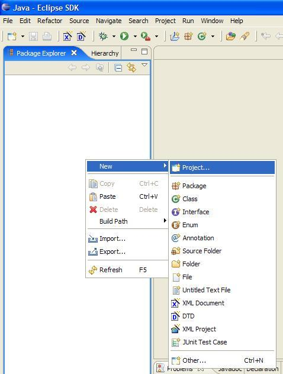
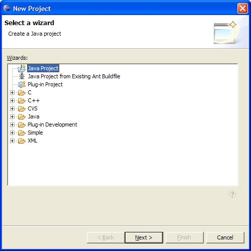
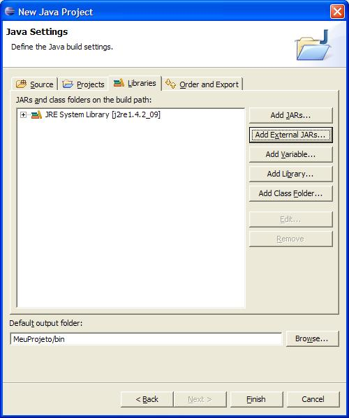
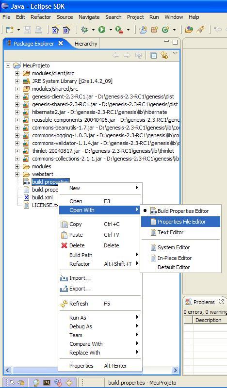
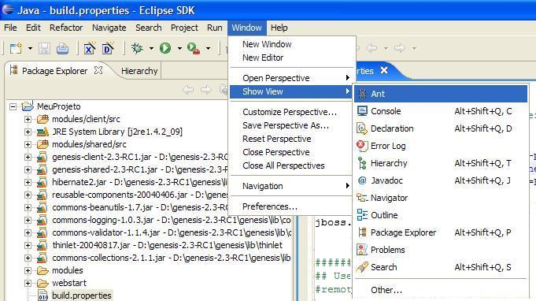

1. Right-click on the Package Explorer and choose New Project
2. Choose Java Project and then Next

3. Give a name to your project and then choose Create project from existing source,
where you should put the empty-project directory. Then click Next.
4. In the Source tab, choose the directory modules/shared/src and add it as
a source directory (the + icon). Eclipse automaticaly recognize the folder
modules/client/src as a source directory. Choose Default
output folder to some directory, like <YOUR_PROJECT>/bin.
5. In the Libraries tab, click in Add External Jars, and choose the genesis jars and the jars that are on genesis lib dir.

6. You don't need to choose all jars, you can add initially the ones
shown in the image. If later another one is needed, you can always
add it. If you're going to use Java 5, add
genesis-annotation-jdk5-<versão>.jar too.
7. Now copy the
8. Right-click build.properties and choose Open With - Properties File Editor.
9. Configure the properties as needed by your environments:
10. You can now compile your project. Go to Window - Show View - Ant

11. Drag the build.xml to the ant view. Double click on the target
all and your project will be compiled.